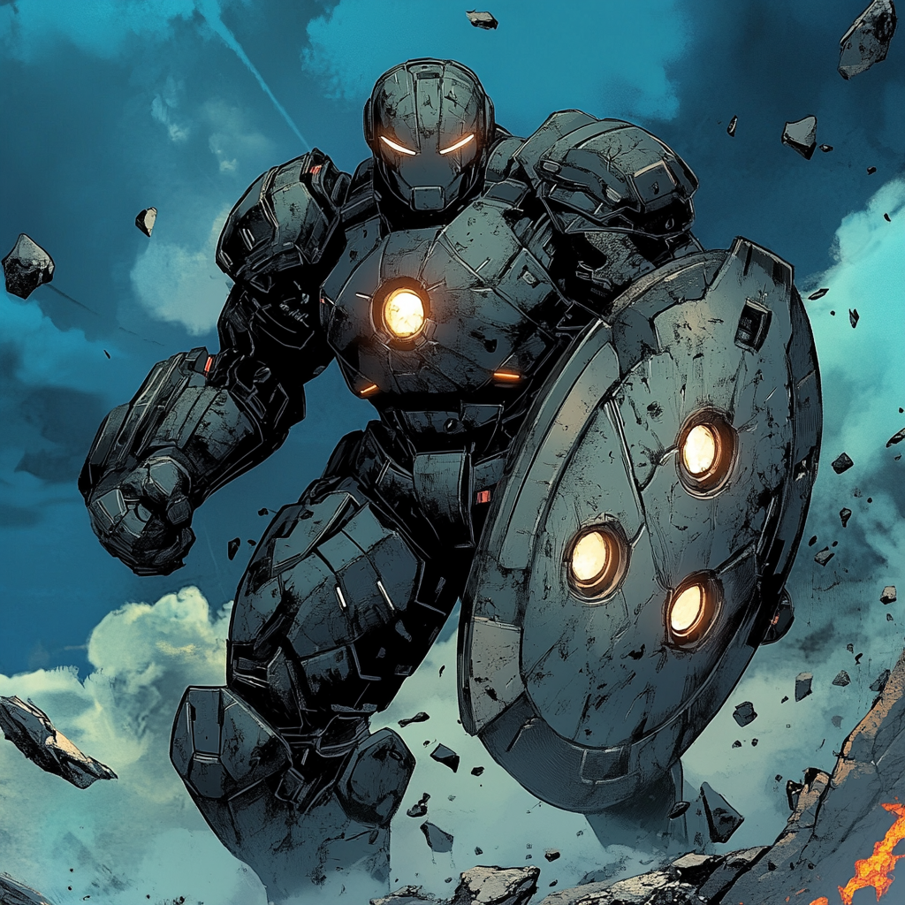

Ironclad: Engineering the Perfect Defense

A Mother's Legacy James Morrison understood vulnerability from an early age. His mother Catherine worked the emergency room night shift at Massachusetts General Hospital, coming home with stories of lives saved and lost. She raised him alone in their small South Boston apartment, her scrubs often bearing the marks of another challenging night. Young James spent countless hours in the hospital break room, sketching designs in worn notebooks while waiting for her shift to end. Each new injury she treated sparked his imagination – better protection, stronger armor, safer equipment.
Foundations of Protection MIT's engineering program recognized his talent early, offering him a full scholarship. James threw himself into materials science and structural engineering, driven by designs that had filled dozens of notebooks. His undergraduate thesis on kinetic energy distribution caught Raytheon's attention, earning him a coveted position in their Advanced Protection Systems division.
In the MIT acoustics lab, he met Marcia Chen, another engineer obsessed with wave propagation. Their late-night discussions about harmonics and energy distribution laid theoretical groundwork that would shape their future powers. James focused on physical protection while Marcia explored sound, but their work intertwined in unexpected ways.
The Breaking Point The attack happened during a routine night shift. A patient in withdrawal became violent, the hospital's inadequate security measures leaving staff vulnerable. Catherine Morrison suffered severe injuries protecting a younger nurse. James spent nights by her hospital bed, watching monitors track his mother's vital signs. His notebooks filled with new designs – not for military applications, but personal protection systems that could prevent such injuries.
Evolution of Defense Raytheon's labs provided resources to develop his modular armor system. The first prototype barely moved, a crude shell of kinetic dampening fields. Each iteration brought improvements, but military contractors pushed for weapons integration. James resisted, his mother's recovery driving his focus on pure defense.
The breakthrough came unexpectedly. Late one night, working with experimental quantum field generators, James miscalculated a power surge. The system overloaded, energy cascading through his prototype. Instead of killing him, the accident fused his neural patterns with the armor's control systems. The technology literally became part of him, responding to his thoughts, growing and adapting with his body.
The Guardian Rises The accident transformed James into something new. His body generated protective fields naturally, the armor's systems evolving into a techno-organic mesh that emerged when needed. Each defensive challenge taught the adaptive protection new patterns. He discovered he could extend his shields to protect others, the ability his mother's injury had made him dream of years ago.
Raytheon wanted to study him, but an unexpected ally emerged. Marcia Chen, now dealing with his own transformation into Pulse, helped James understand his new existence. Their combined knowledge of wave physics opened new possibilities for both their powers. When the Boston Avengers Academy offered James a position, Marcia encouraged him to accept.
Present Day James splits his time between BAA training and hospital visits, where his mother now oversees staff security. His armor continues to evolve, each mission teaching it new defensive patterns. The break room where he once sketched as a child now has better protective systems, his technology quietly keeping the staff safer.
His relationship with Marcia strengthens both their abilities. Ironclad's armor incorporates sound dampening fields that let them work in close proximity, while Pulse's sonic powers amplify the armor's defensive capabilities. Together, they represent a new kind of protection – one that could prevent others from suffering as James's mother did.
The scared child who sketched armor designs in a hospital break room has become a living shield for others. While his teammates sometimes rush toward danger, Ironclad moves to protect – his mother's legacy living on in every life he saves.